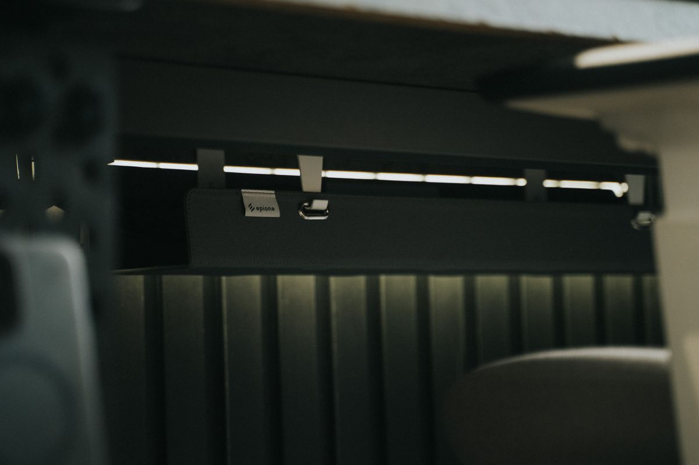
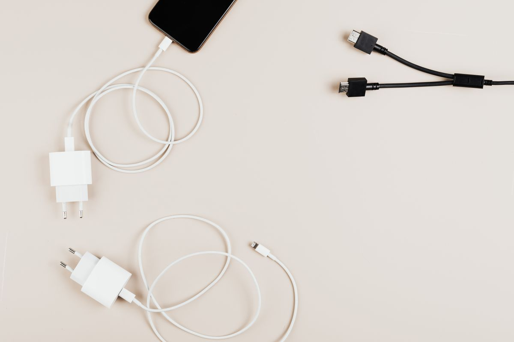
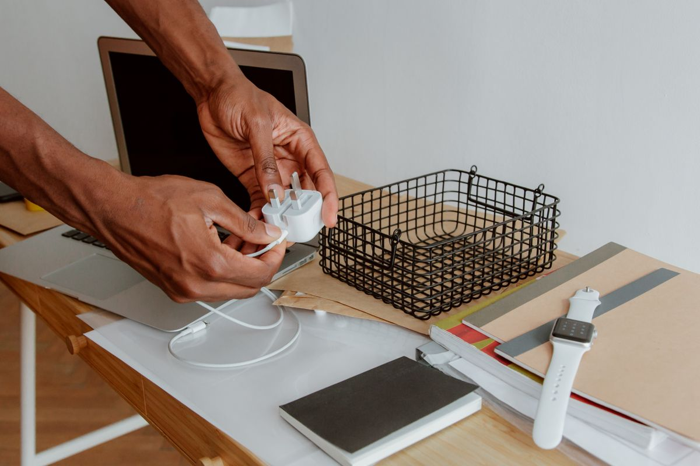
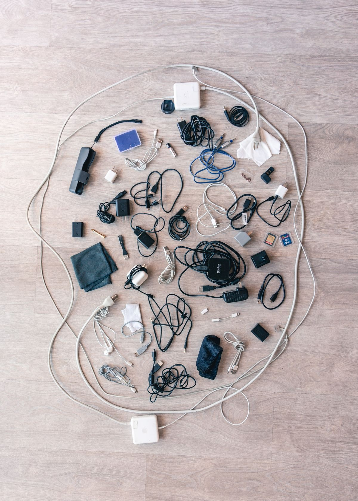
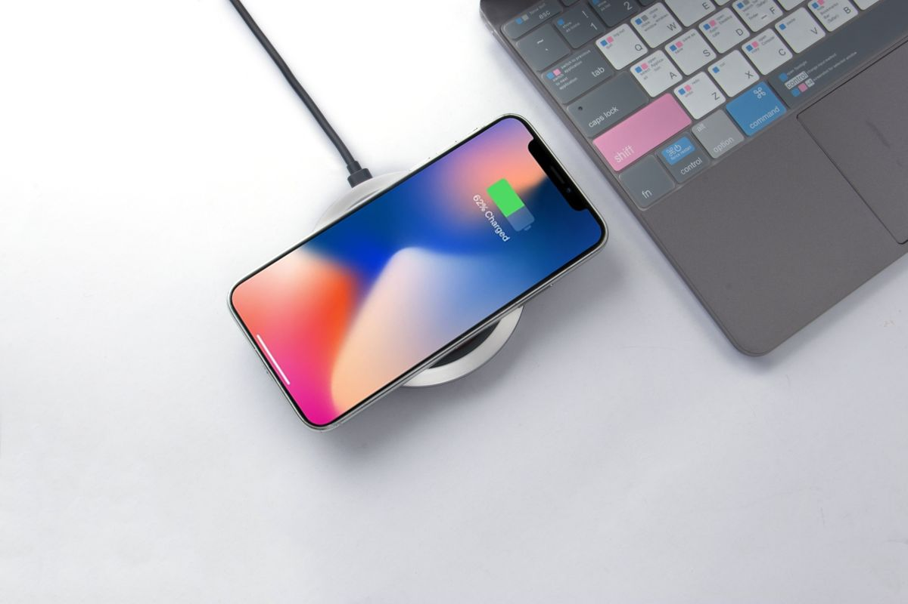

จัดสายไฟบนโต๊ะทำงานให้เนี้ยบ: รวมอุปกรณ์ Cable Management ที่ต้องมี ปี 2026
รวมอุปกรณ์จัดสายไฟบนโต๊ะทำงานที่ใช้งานได้จริง ราคาไม่แพง เปลี่ยนโต๊ะรกๆ ให้ดูเป็นระเบียบได้ในไม่กี่นาที ซื้อผ่าน Shopee
อัปเดต กรกฎาคม 2026
ใครที่ทำงานอยู่หน้าจอคอมพิวเตอร์ทั้งวัน คงรู้ดีว่าปัญหาที่กวนใจมากที่สุดอย่างหนึ่งไม่ใช่เรื่องงาน แต่คือสายไฟที่พันกันยุ่งเหยิงใต้โต๊ะ ทั้งสายชาร์จ สายจอ สาย HDMI สายเมาส์คีย์บอร์ด กองรวมกันจนบางทีต้องก้มลอดหาปลั๊กแทบไม่เจอ นอกจากจะดูรกแล้ว สายไฟที่ระเกะระกะยังเป็นอันตราย เดินสะดุดได้ง่าย และทำให้ทำความสะอาดโต๊ะลำบากขึ้นด้วย
การจัดระเบียบสายไฟไม่ใช่แค่เรื่องความสวยงาม แต่ช่วยให้พื้นที่ทำงานโล่งขึ้น สมองปลอดโปร่งขึ้น และทำงานได้มีประสิทธิภาพมากขึ้นจริง ๆ บทความนี้รวมอุปกรณ์จัดสายไฟที่ใช้งานได้จริง ราคาไม่แพง แต่เปลี่ยนโต๊ะทำงานรกๆ ให้ดูเป็นระเบียบได้ในเวลาไม่กี่นาที
ทำไมต้องจัดสายไฟให้เป็นระเบียบ
ก่อนจะไปดูอุปกรณ์แนะนำ ลองมาดูเหตุผลที่ควรลงทุนเรื่องนี้กันก่อน
ความปลอดภัย สายไฟที่พาดผ่านทางเดินหรือกองอยู่ใต้เท้า เสี่ยงต่อการสะดุดล้มหรือทำอุปกรณ์อิเล็กทรอนิกส์เสียหาย โดยเฉพาะบ้านที่มีเด็กหรือสัตว์เลี้ยงที่ชอบกัดสาย
อายุการใช้งานของอุปกรณ์ สายไฟที่ถูกบิดงอหรือกดทับเป็นเวลานานเสี่ยงชำรุดเร็วกว่าปกติ การจัดเก็บอย่างถูกวิธีช่วยยืดอายุการใช้งาน
ประสิทธิภาพการทำงาน พื้นที่ทำงานที่รกรุงรังส่งผลต่อสมาธิโดยไม่รู้ตัว งานวิจัยด้านจิตวิทยาสิ่งแวดล้อมหลายชิ้นชี้ว่าสภาพแวดล้อมที่เป็นระเบียบช่วยลดความเครียดและเพิ่มโฟกัสได้
อุปกรณ์จัดสายไฟที่แนะนำ

1. รางเก็บสายไฟใต้โต๊ะ (Cable Tray)
เป็นอุปกรณ์พื้นฐานที่สุดแต่ทรงพลังที่สุด ติดตั้งใต้ท้องโต๊ะเพื่อรวบรวมปลั๊กพ่วง อะแดปเตอร์ และสายไฟส่วนเกินให้ลอยพ้นพื้น มองจากด้านบนหรือด้านหน้าจะไม่เห็นสายไฟเลยแม้แต่เส้นเดียว รุ่นที่ดีควรทำจากตาข่ายเหล็กเพื่อระบายความร้อนจากอะแดปเตอร์ได้ดี รางเก็บสายไฟใต้โต๊ะแบบตาข่ายเหล็ก เป็นตัวเลือกที่ติดตั้งง่าย ไม่ต้องเจาะรูโต๊ะ

2. คลิปรัดสายไฟ (Cable Clips)
อุปกรณ์ชิ้นเล็กแต่ช่วยได้มาก ใช้ติดขอบโต๊ะหรือใต้โต๊ะเพื่อกันสายชาร์จหล่นตกลงพื้นทุกครั้งที่ดึงออกจากโน้ตบุ๊ก แนะนำแบบซิลิโคนที่ยึดด้วยกาวสองหน้า เพราะไม่ทิ้งคราบเมื่อแกะออก และปรับตำแหน่งได้ตามต้องการ คลิปรัดสายไฟซิลิโคนแบบติดกาว แพ็ค 10 ชิ้น คุ้มค่ามากเมื่อเทียบกับปัญหาที่แก้ได้

3. ท่อร้อยสายไฟแบบยืดหยุ่น (Cable Sleeve)
เหมาะสำหรับคนที่มีสายไฟหลายเส้นวิ่งจากโต๊ะลงพื้นหรือไปยังปลั๊กไฟ ท่อร้อยสายจะรวมสายทั้งหมดให้เป็นเส้นเดียวดูเรียบร้อย มีซิปให้เปิดเพิ่มสายได้ภายหลังโดยไม่ต้องถอดทั้งหมด ท่อร้อยสายไฟแบบมีซิป ความยาวปรับได้ เหมาะกับโต๊ะทำงานที่มีอุปกรณ์เยอะอย่างจอสองจอหรือลำโพงแยก

4. กล่องซ่อนปลั๊กพ่วง (Cable Box)
ปลั๊กพ่วงที่มีสายชาร์จเสียบเต็มมักเป็นจุดที่รกที่สุดในบ้าน กล่องซ่อนปลั๊กช่วยเก็บทั้งปลั๊กพ่วงและส่วนเกินของสายไฟไว้ในกล่องเดียว ดูเรียบร้อยและกันฝุ่นได้ด้วย กล่องเก็บปลั๊กพ่วงและสายไฟ ดีไซน์มินิมอล วางบนโต๊ะหรือใต้โต๊ะก็ได้ตามพื้นที่ที่มี

5. แท่นชาร์จรวม (Charging Station)
ถ้ามีทั้งมือถือ หูฟัง และนาฬิกาสมาร์ทวอทช์ที่ต้องชาร์จทุกวัน แท่นชาร์จรวมช่วยลดจำนวนสายและอะแดปเตอร์ที่ต้องเสียบพร้อมกันได้มาก บางรุ่นรองรับ Qi wireless charging ในตัว ทำให้ไม่ต้องมีสายเลยด้วยซ้ำ แท่นชาร์จไร้สาย 6-in-1 สำหรับมือถือ หูฟัง นาฬิกา
6. ป้ายติดสายไฟ (Cable Labels)
อุปกรณ์เล็กๆ ที่คนมักมองข้าม แต่มีประโยชน์มากเมื่อต้องถอดหรือสลับสายบ่อยๆ โดยเฉพาะคนที่มีอุปกรณ์หลายชิ้นต่อกับปลั๊กพ่วงเดียวกัน ป้ายชื่อช่วยให้รู้ทันทีว่าสายไหนต่อกับอะไรโดยไม่ต้องไล่ตาม ป้ายติดสายไฟแบบเขียนซ้ำได้
เกณฑ์การเลือกซื้ออุปกรณ์จัดสายไฟ
เมื่อจะเลือกซื้ออุปกรณ์จัดสายไฟ มีปัจจัยหลักที่ควรพิจารณาดังนี้
ขนาดและปริมาณสายไฟที่มี ควรสำรวจก่อนว่ามีสายไฟกี่เส้น ขนาดใหญ่แค่ไหน เพื่อเลือกขนาดรางหรือท่อร้อยสายให้พอดี ไม่เล็กไปจนใส่ไม่ได้ หรือใหญ่เกินจนดูเทอะทะ
วัสดุและการระบายความร้อน อุปกรณ์ที่ต้องรองรับอะแดปเตอร์ชาร์จหรือปลั๊กพ่วงควรเลือกวัสดุที่ระบายอากาศได้ดี เช่นตาข่ายเหล็กหรือพลาสติกมีรูระบาย เพื่อป้องกันความร้อนสะสม
วิธีการติดตั้ง บางรุ่นต้องเจาะรูโต๊ะ บางรุ่นใช้กาวหรือคลิปหนีบแทน ควรเลือกให้เหมาะกับเนื้อโต๊ะและนโยบายของที่พัก โดยเฉพาะคนเช่าห้องที่ไม่สามารถเจาะผนังหรือเฟอร์นิเจอร์ได้
ความสามารถในการขยายภายหลัง ถ้าคาดว่าจะมีอุปกรณ์เพิ่มในอนาคต เช่น ซื้อจอเพิ่มหรือเปลี่ยนเป็นโต๊ะปรับระดับ ควรเลือกระบบจัดสายไฟที่ปรับหรือเพิ่มสายได้ง่ายโดยไม่ต้องรื้อทั้งระบบ
สรุป
การจัดสายไฟให้เป็นระเบียบเป็นการลงทุนเล็กๆ ที่ให้ผลตอบแทนคุ้มค่าเกินราคา ทั้งเรื่องความปลอดภัย ความสวยงาม และสมาธิในการทำงาน ไม่จำเป็นต้องซื้อทุกชิ้นพร้อมกัน เริ่มจากปัญหาที่กวนใจที่สุดก่อน เช่นถ้าสายชาร์จหล่นบ่อยก็เริ่มจากคลิปรัดสาย ถ้าใต้โต๊ะรกมากก็เริ่มจากรางเก็บสายไฟ แล้วค่อยๆ เพิ่มอุปกรณ์อื่นตามความจำเป็น รับรองว่าโต๊ะทำงานจะดูเปลี่ยนไปอย่างเห็นได้ชัดภายในวันเดียว
บทความนี้มีลิงก์ affiliate เมื่อคุณซื้อผ่านลิงก์ เราอาจได้รับค่าคอมมิชชั่นโดยที่คุณไม่ต้องจ่ายเพิ่ม